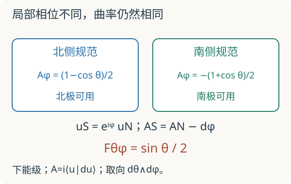

基础衔接 03 · Berry 联络与曲率：把两能级的相位算清楚
先修：量子态与内积、自旋、绝热近似。目标：从一个明确本征态推出联络、曲率与回路相位，再接到拓扑能带。全讲固定 \(A=i\langle u|du\rangle\)，曲率 \(F=dA\)，球面取向为 \(d\theta\wedge d\phi\)。
1. 能量没有变化，绕一圈为何仍能留下相位
取 Hamiltonian \(H=E\mathbf n\cdot\boldsymbol\sigma\)，\(E>0\) 是能量，\(\mathbf n=(\sin\theta\cos\phi,\sin\theta\sin\phi,\cos\theta)\) 为单位向量，角度以弧度计。两条能量恒为 \(\pm E\)，能隙恒为 \(2E\)。改变 \(\mathbf n\) 不改能谱，却会改变本征态。
若沿缓慢路径保持在一个非简并本征态，设 \(|\psi(t)\rangle=e^{i\alpha(t)}|u(t)\rangle\)。代入 Schrödinger 方程，并左乘 \(\langle u|\)，得到
总相位包含动力学部分 \(-\int\varepsilon dt/\hbar\) 与几何部分 \(\gamma=\int i\langle u|du\rangle\)。本实验只算后者；快速驱动引起跃迁时，这个绝热单带描述就不够了。
2. 先写出下能级的向量，符号才有依据
记 \(s=\sin(\theta/2),c=\cos(\theta/2)\)，选择
其范数为一。第一分量相乘后为 \(e^{-i\phi}(-s\cos\theta+c\sin\theta)=e^{-i\phi}s\)；第二分量为 \(-s\sin\theta-c\cos\theta=-c\)。故 \(H|u_-^N\rangle=-E|u_-^N\rangle\)，确实是下能级。
直接求导：
于是 \(\langle u|\partial_\theta u\rangle=0\)，\(\langle u|\partial_\phi u\rangle=-is^2\)，所以
下能级在本约定下是正号。换上能级、改 \(A\) 的定义或反转取向都可能改变符号；固定了三者之后，符号就不能随意挑选。
3. 北边好用的相位，到南极失效
在北极 \(\theta=0\)，\(u_-^N=(0,1)^T\) 不依赖 \(\phi\)。在南极却成为 \((-e^{-i\phi},0)^T\)，同一个物理点用了不同向量表示。不是量子态奇异，而是这个局部相位选择不能覆盖整个球面。
取南侧规范 \(u_-^S=e^{i\phi}u_-^N=(-s,e^{i\phi}c)^T\)，它在南极良好。一般相位变换 \(u'=e^{i\chi}u\) 给出
因此 \(A_S=-(1+\cos\theta)d\phi/2\)，但 \(dA_S=dA_N\)。联络的局部表达不同，曲率相同。两个规范沿重叠处通过过渡函数连接；这与数学的层与粘合共享局部数据的组织方式，不过这里还多了 Hermitian 内积与联络。

4. 一条纬线与整个球面是两个不同问题
固定 \(0<\theta<\pi\)，令 \(\phi\) 正向走一圈：
两种结果有相同的 \(e^{i\gamma}\)。对任意非周期规范，闭合物理路径的规范不变表达还应包括端点项：\(\gamma=\int A+\arg\langle u(0)|u(T)\rangle\)。不能只积分一个在首尾选了不同相位的向量而漏掉这个补偿。
整个球面上 \(\int F=2\pi\)，故第一 Chern 数 \(C=(2\pi)^{-1}\int F=1\)。一条纬线相位一般不是整数；球面整体积分则是本征线丛的不变量。
把球面参数换成任意 \(x,y\)，下带曲率是拉回：
这也可由 \(P_-=(1-\mathbf n\cdot\boldsymbol\sigma)/2\) 与 \(F_{xy}=i\operatorname{Tr}P_-[\partial_xP_-,\partial_yP_-]\) 得到。用 \([\mathbf a\cdot\boldsymbol\sigma,\mathbf b\cdot\boldsymbol\sigma]=2i(\mathbf a\times\mathbf b)\cdot\boldsymbol\sigma\) 即可检查正号。它是检查 QWZ 能带公式的独立方法。
先预测：换南侧规范后，相位改了 \(2\pi\)，干涉结果会改变吗？默认 \(\theta/\pi=0.5\)、北侧规范、64 个回路分段。精确相位 \(\gamma=\pi\)，\(F_{\theta\phi}=1/2\)；南侧为 \(-\pi\)，但两者的复相位都为 \(-1\)。
数值实验用闭合重叠乘积 \(\gamma_N^{\rm disc}=-\arg\prod_j\langle u_j|u_{j+1}\rangle\)，比较的是模 \(2\pi\) 的误差。离散点太少会有误差；若相邻重叠为零，取相位本身失去定义。实验限制角度远离两极，并显示分段数以避免把网格结果当精确公式。
5. 迁移题
题一。 取 \(\theta=\pi/3\)，计算两种规范的纬线相位与共同曲率。
查看计算
\(\gamma_N=\pi/2\)，\(\gamma_S=-3\pi/2\)，二者的复相位均为 \(i\)；\(F_{\theta\phi}=\sqrt3/4\)。不能因原始实数相位不同就判断物理不同。
题二。 把 \(E\) 从正数连续降到零，球面方向 \(\mathbf n\) 仍可在代码里定义，这是否保证 Berry 单带结论仍适用？
查看能隙条件
不保证。\(E=0\) 时整个两能级简并，Hamiltonian 不再选定唯一的下带投影。继续代入同一个向量只是在简并空间中人为挑选一个态，不能当作隔离能带的几何不变量。
速查与下一步
本约定下 \(A_N=(1-\cos\theta)d\phi/2\)，\(F_{\theta\phi}=\sin\theta/2\)，下带球面 Chern 数为 \(+1\)。回到拓扑能带，再进入量子几何张量与量子度量。几何相位的原始定义参见 Berry：Quantal phase factors accompanying adiabatic changes；正文计算使用明确约定独立展开。核查：2026-09-08。